Artist
Mahsa Karimi
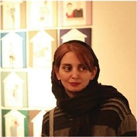
- Born1981
- FromTehran, Iran
- Works21
- Dated2014–2015
StatementAbout the work
Phobia
In the Alice in Wonderland, Lewis Carroll represented a world which all characters, objects and incidents are basically different from real life.
Characters and scenes are all in the paradoxical situation. They escape from the reality of the new world that can grasp the actuality they experience to undertake a meaningful life without being grown up.
Undoubtedly this series of paintings are somehow similar to the wonderland. The artist put the figures in a purely imaginary incredible universe.
The exaggerated figures have become to creatures,but the extremely bright and flat colors and also the naughty positions she creates estimate the joy of innocence instead of fear and anxiety.
For sure,stepping in to the fantastic world of childhood is a good way to escape the fear of adolescence! The repeated cockroaches in all paintings express her fears of usual and routine life.This unrealistic and exaggerated fear clearly describes the title. Artist depicted a boring Normal daily life which refers to consumption and popular culture and criticizes all these manners. She objected to this kind of life style but because of the painting style the manifest is not too bold.
Hamidreza Karimi
Works21 artworks

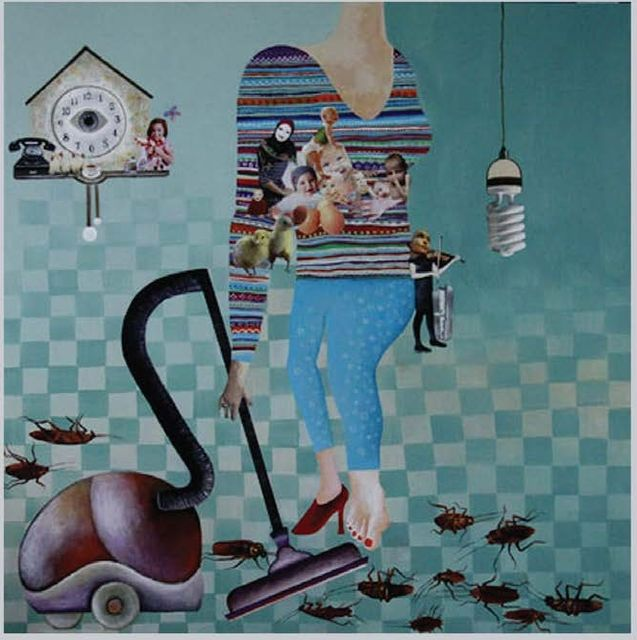

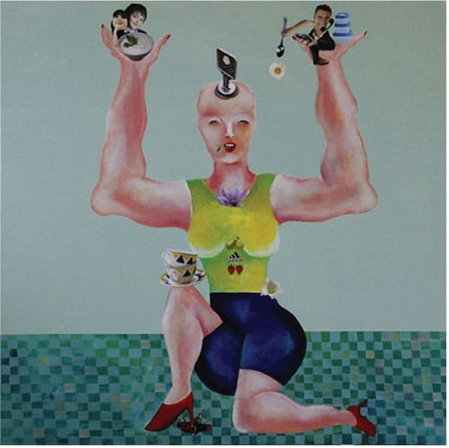

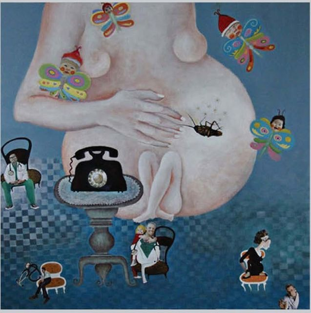

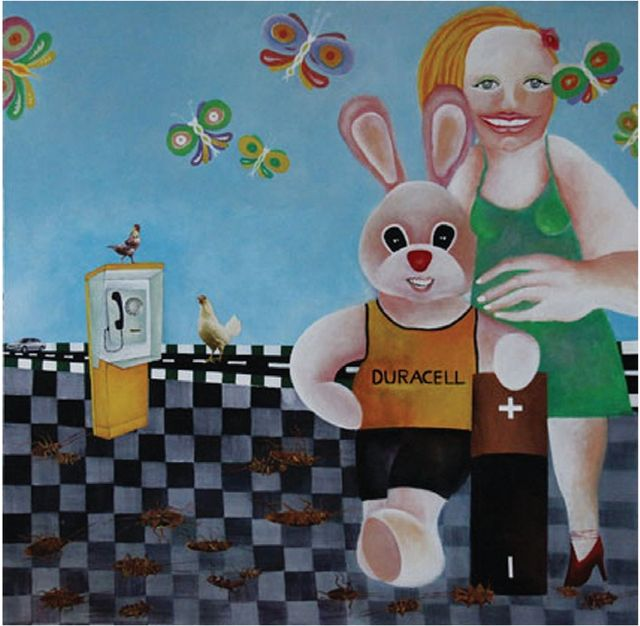

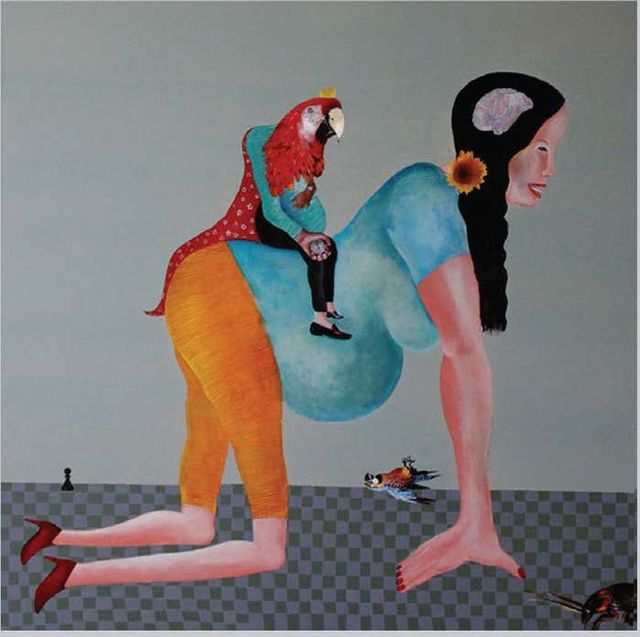
Retail and wholesale of your family photos 2015
The main concept is related to the first expression I had while I was looking at some family photos. To be honest I was thinking of family matters and the kind of relationship they have. I mean their facial expression and body language. I believe there is a long distance between the reality of their relationship and the figures they choose for their pictures . most of the times they try to show off they are so happy and close to each other but there is always a big question mark shining in my mind!. Again these are kind of irony of human relationship.
Mahsa Karimi

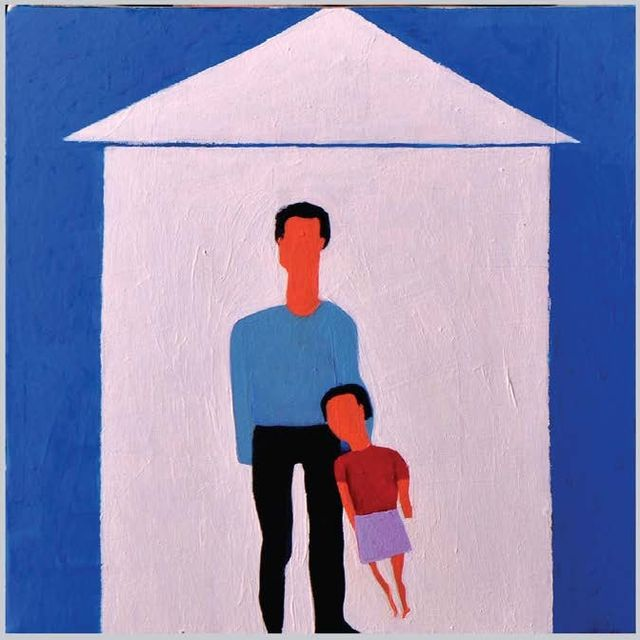

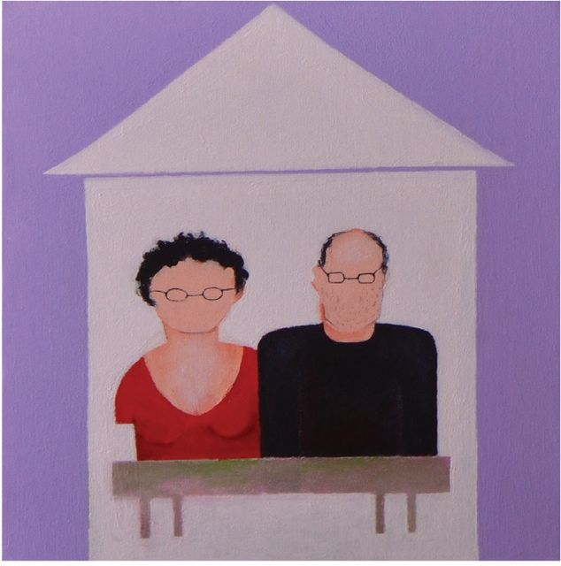

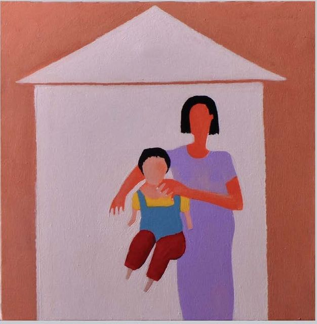

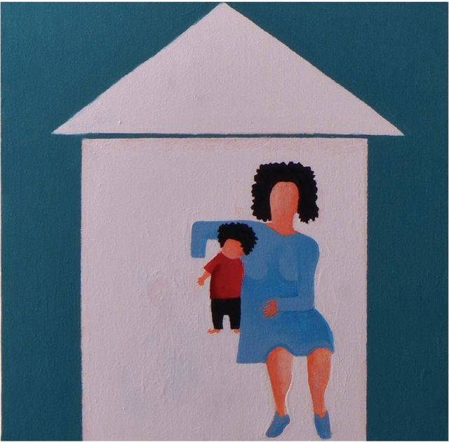

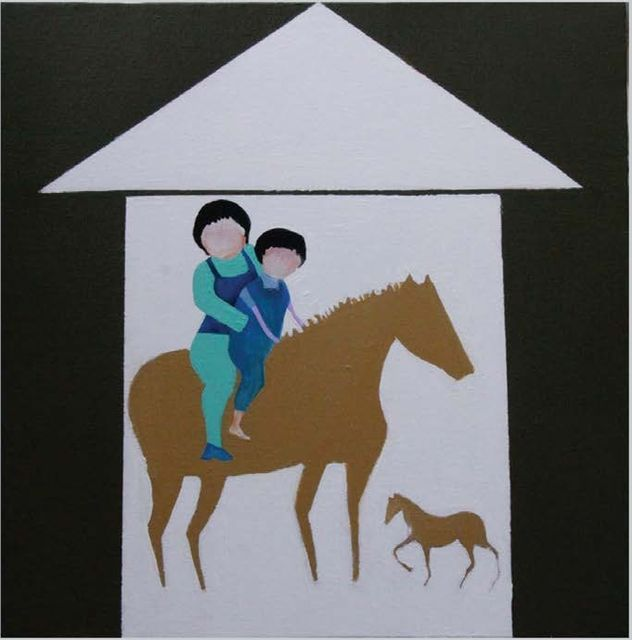

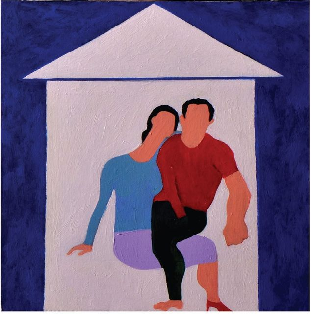

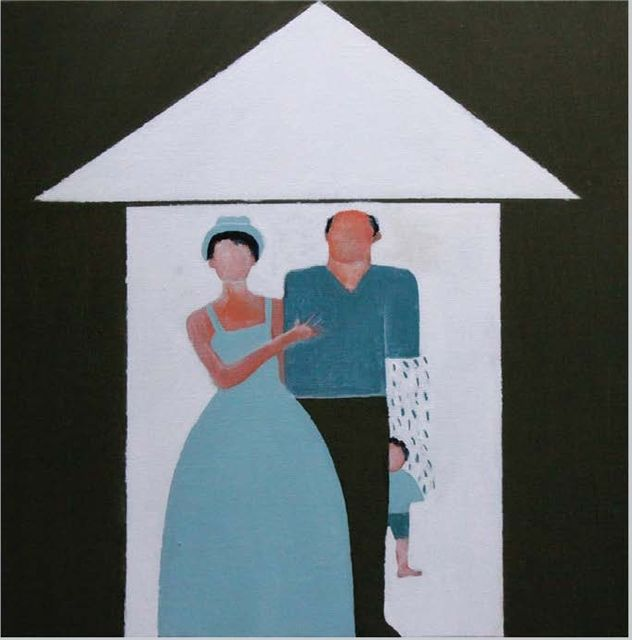

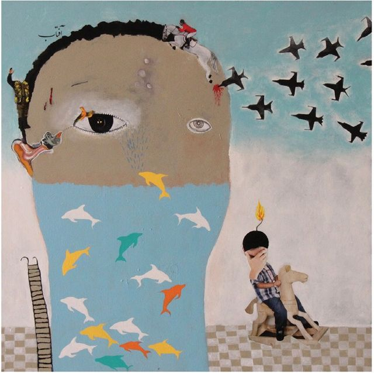

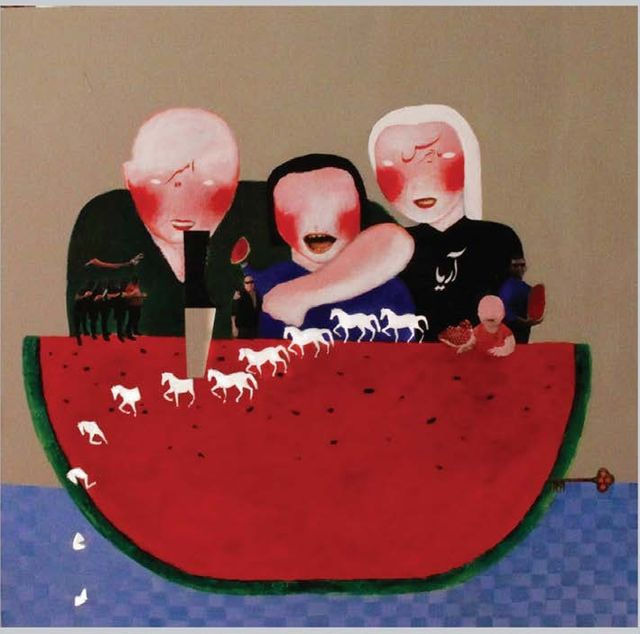

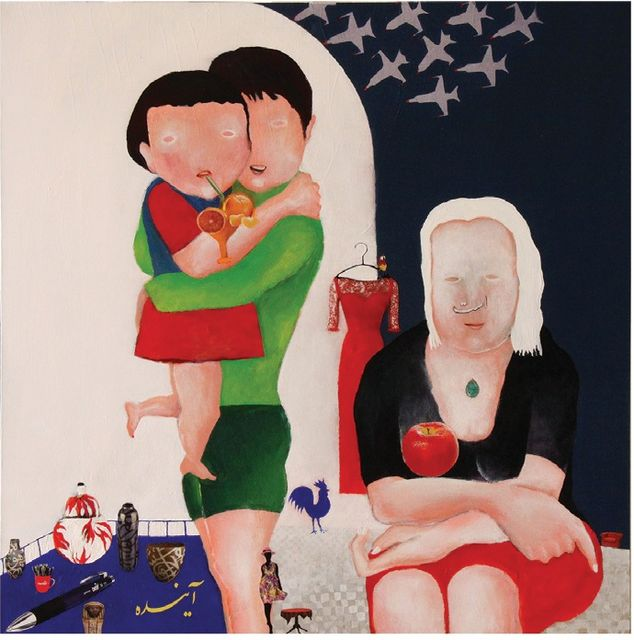

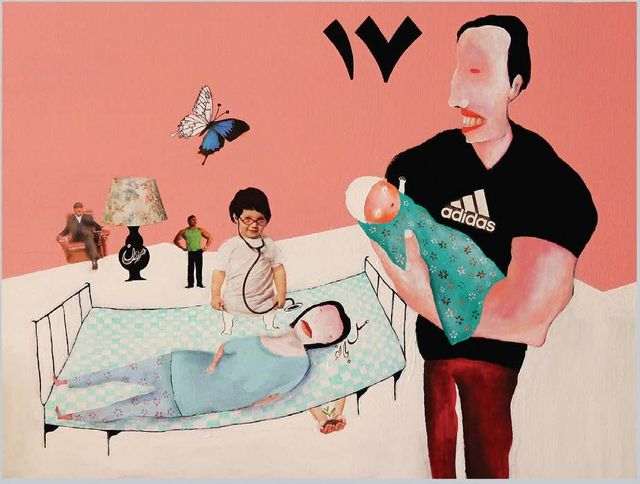

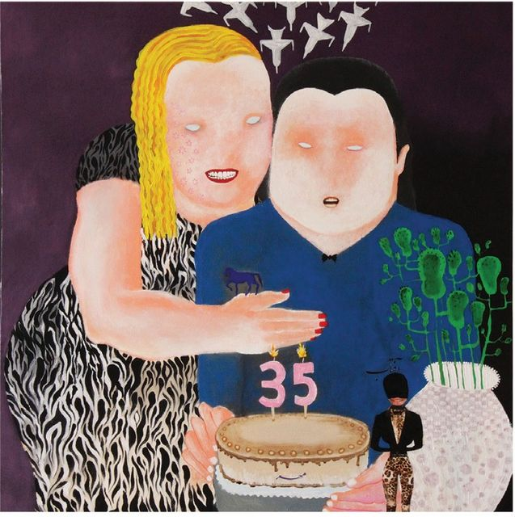

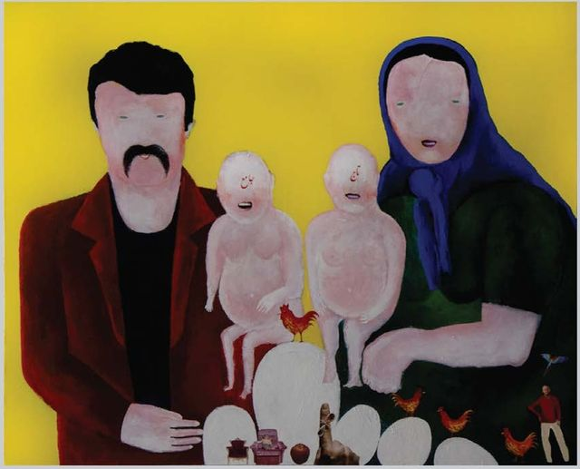

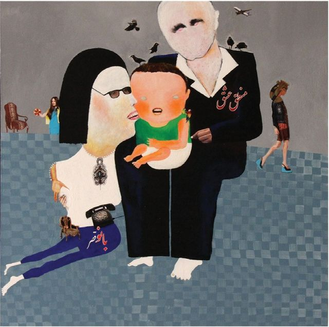

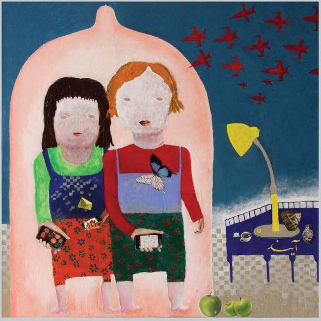

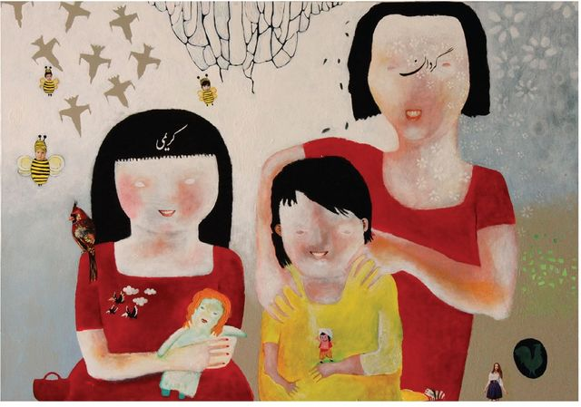
History of experienceBiography · education · exhibitions · awards
Education
- Graduated in graphic design
- 2007Tafe college|Australia
- 2011Imaginary papers-Illustrations, Imam Ali Gallery|Tehran – Iran
- 2011Ghalam publication, Illustrations
- 2011Mashghe honar publication, Illustrations
- 2011Resistance festival, Paintings, Saba art gallery|Tehran – Iran
- 2011The artworks of contemporary artists with "Takesh" art gallery collaboration, Azad art gallery|Tehran – Iran
- 2010Select artists of new generation, Pardis art gallery|Tehran – Iran
- 2010Illustrations for Handicapped Children, The House of Artists|Tehran – Iran
- 2010International youth festival, Paintings, Tehran art council
- 2010International youth festival, Illustrations, Tehran art council
- 2010Talk magazine, Paintings and Illustrations
- 2009Festival of contemporary design, Imam Ali museum|Tehran – Iran
- 2009Titles design of "Pelake 10" TV program
- 2006International youth visual arts festival, Imam Ali Museum|Tehran – Iran
- 2005Meraj Illustration festival, Contemporary art museum|Isfahan – Iran
Solo exhibitions
- 2015Retail and wholesale of your family photos, Azad art gallery|Tehran – Iran
- 2013Phobia, Azad art gallery|Tehran – Iran
- 2012Afternoon tea will be provided, Azad art gallery|Tehran – Iran
Group exhibitions
- 2015No 6 Gallery|Tehran – Iran
- 2015Cultural association "Iranian painters"
- 2013Artist house"year2"|Tehran – Iran
- 2013Haft negah" Niyavaran|Tehran – Iran
- 2013Hoom gallery|Tehran – Iran
- 2013Art lab gallery|Lebanon Beirut
Source: the Sobhan Gallery artist catalogue “Mahsa Karimi.pdf”.